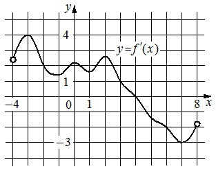

Авторский разбор и аудит предварительны; внешней экспертизы нет.
Модель автора: claude-opus-5-5 (opus; effort=low); в основных частотах: True ·
Впишите правильный ответ.
На рисунке изображён график производной функции , определённой на интервале . Найдите точку экстремума функции , принадлежащую отрезку .

КЭС: 4.2 Применение производной к исследованию функций на монотонность и экстремумы. Нахождение наибольшего и наименьшего значения функции на отрезке
4
| ID / вход | Действие | Результат | Локальные KC |
|---|---|---|---|
| s1 · condition | По графику производной найти на отрезке [1; 6] точки, где f'(x) обращается в ноль | На [1; 6] график f'(x) пересекает ось абсцисс в единственной точке x = 4 (по сетке рисунка) | kc1 |
| s2 · condition, s1 | Определить смену знака производной в найденной точке и сделать вывод об экстремуме | f'(x) меняет знак с + на − при x = 4, значит x = 4 — точка максимума, точка экстремума на [1; 6] | kc2 |
[
{
"id": "m1",
"name": "Поиск экстремума по графику производной через нули и смену знака",
"step_ids": [
"s1",
"s2"
]
}
]Вход: график y=f'(x) и промежуток. Операция: определить абсциссы точек пересечения графика с осью Ox на промежутке. Граница: только точки, читаемые по сетке рисунка.
{
"local_kc_id": "kc1",
"status": "new_candidate",
"catalog_kc_id": null,
"evidence": [
{
"ref": "step:s1:action",
"quote": "По графику производной найти на отрезке [1; 6] точки, где f'(x) обращается в ноль"
},
{
"ref": "step:s1:result",
"quote": "На [1; 6] график f'(x) пересекает ось абсцисс в единственной точке x = 4 (по сетке рисунка)"
},
{
"ref": "image:assets/79092f82e88ffb8410e4e668.png",
"region_description": "Кривая y=f'(x) на сетке с единичным шагом: на участке x от 1 до 6 график сверху опускается и пересекает ось Ox около x=4 (точка пересечения не отмечена отдельно), далее остаётся ниже оси"
}
],
"context_refs": [
"condition"
],
"alternatives_checked": [
{
"catalog_kc_id": "stationary_point",
"reason": "Определение требует решить уравнение f'=0 аналитически на области; здесь нули считываются с графика производной, без уравнения"
},
{
"catalog_kc_id": "graph_coordinates",
"reason": "Покрывает считывание отмеченных точек и явно заданных пересечений; здесь пересечение не отмечено, а ограничение отрезком [1; 6] не входит"
},
{
"catalog_kc_id": "literal_9aee0783618d",
"reason": "Про знак производной и направление смены знака, не про нахождение абсцисс нулей"
},
{
"catalog_kc_id": "literal_6ad8f502588e",
"reason": "Только отбор кандидатов по промежутку, без считывания нулей с графика"
}
],
"rationale": "Операция: по графику y=f'(x) определить абсциссы пересечений с осью Ox на заданном отрезке. Каталог содержит аналитическое нахождение стационарных точек и считывание отмеченных точек, но не графическое нахождение нулей производной с ограничением промежутком.",
"proposal": {
"name": "Находить нули производной по её графику на промежутке",
"definition": "По графику y=f'(x) с координатной сеткой определить абсциссы точек пересечения (касания) графика с осью Ox, принадлежащие заданному промежутку; точность ограничена масштабом сетки, тип экстремума не определяется."
},
"blocking": false,
"issue_ids": [
"i1"
]
}Вход: нуль производной и знаки производной слева и справа. Операция: при смене знака сделать вывод о максимуме или минимуме; без смены знака экстремума нет. Граница: функция дифференцируема в окрестности точки.
{
"local_kc_id": "kc2",
"status": "match",
"catalog_kc_id": "local_extreme_sign",
"evidence": [
{
"ref": "step:s2:result",
"quote": "f'(x) меняет знак с + на − при x = 4, значит x = 4 — точка максимума"
}
],
"context_refs": [
"step:s1:result",
"image:assets/79092f82e88ffb8410e4e668.png"
],
"alternatives_checked": [
{
"catalog_kc_id": "literal_9aee0783618d",
"reason": "Считывание знака по графику — входное действие, но вывод о типе экстремума в этот узел не входит"
},
{
"catalog_kc_id": "derivative_monotonicity",
"reason": "Вывод о монотонности на промежутках не делается, делается вывод о локальном экстремуме"
},
{
"catalog_kc_id": "global_interval_extreme",
"reason": "Вопрос об абсциссе локального экстремума, не о глобальном экстремуме"
}
],
"rationale": "Наблюдаемая смена знака +→− в нуле x=4 используется для вывода о максимуме; это совпадает с определением local_extreme_sign. Считывание знаков по графику — отдельное неразмеченное действие (см. i2).",
"proposal": null,
"blocking": false,
"issue_ids": [
"i2"
]
}[ "Абсцисса нуля производной определена визуально по сетке рисунка" ]
[
{
"id": "i1",
"kind": "boundary",
"refs": [
"step:s1:result",
"image:assets/79092f82e88ffb8410e4e668.png"
],
"description": "Абсцисса нуля x=4 определена визуально; на рисунке пересечение не отмечено точкой, оно близко к узлу сетки x=4. Ответ правдоподобен, но опирается на точность чтения сетки.",
"blocking": false,
"affected_local_kc_ids": [
"kc1"
]
},
{
"id": "i2",
"kind": "missing_annotation",
"refs": [
"step:s2:action"
],
"description": "Определение знака f'(x) слева и справа от x=4 по положению графика относительно оси (literal_9aee0783618d) выполнено в s2, но не выделено отдельным кандидатом; kc2 по описанию получает знаки на вход.",
"blocking": false,
"affected_local_kc_ids": [
"kc2"
]
}
]{
"author_path": "data/annotation/runs/2026-11-09-fipi-team-bogdan108-next-100/raw/author/B81155.json",
"auditor_path": "data/annotation/runs/2026-11-09-fipi-team-bogdan108-next-100/raw/auditor/B81155.json",
"accepted_after_review": null
}